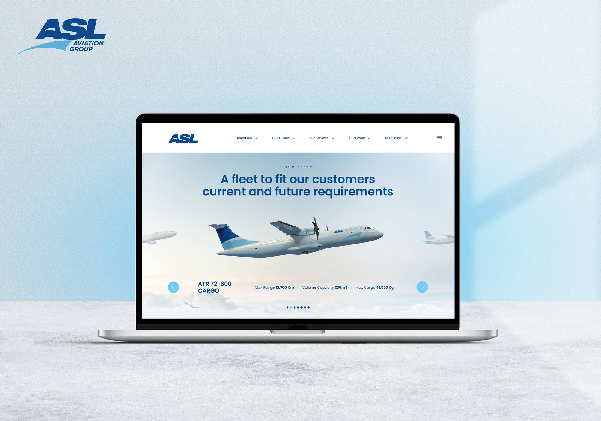
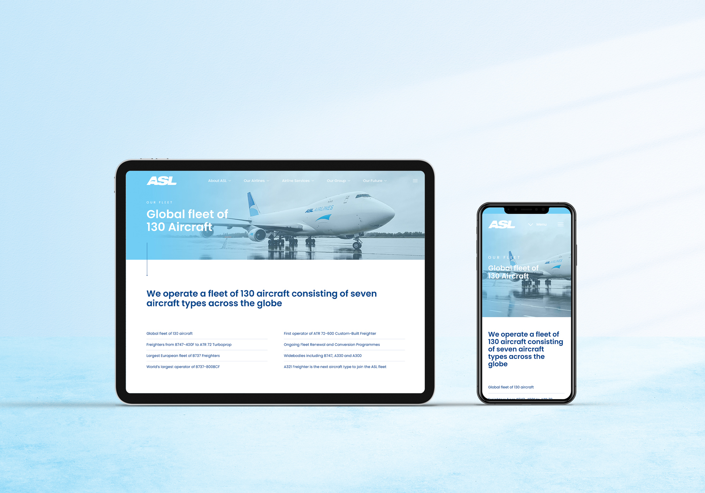
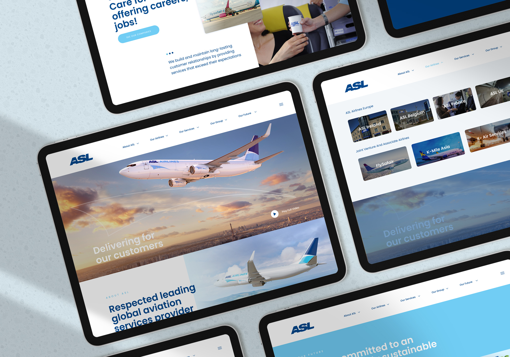
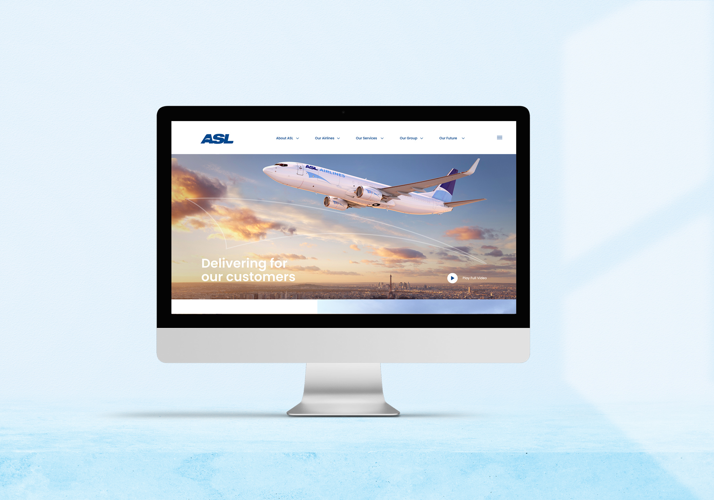

ASL Airlines
Activating Aviation Excellence
ASL Aviation Group is a global airline organisation headquartered in Dublin, with more than 3,500 people across 13 countries. The group needed a website and refined brand identity that could represent nine airlines and four sub-brands to clients, partners and capital investors worldwide, delivered in fourteen weeks for a major investment milestone.
ASL Aviation Group is a global airline organisation headquartered in Dublin, with more than 3,500 people across 13 countries. The group needed a website and refined brand identity that could represent nine airlines and four sub-brands to clients, partners and capital investors worldwide, delivered in fourteen weeks for a major investment milestone.

One group, many airlines
The core challenge was harmony: every entity in the group had to reflect a shared brand architecture while showcasing the character of its own operation. I set brand consistency first: uniform livery, logo treatment and tone of voice. From there I designed a page framework flexible enough to let each of the airlines express its own personality within it.

Designing for everyone, everywhere
I applied the seven principles of Universal Design to the UX: equitable use, flexible navigation, simple and intuitive structure, perceptible information, tolerance for error, low effort and generous space. The interface stays nearly invisible: clear language, predictable patterns, and spatial hierarchy that draws attention to what matters most.

A story told through real imagery
I was determined not to use stock photography. The story of ASL is told through its own aircraft and people, using photography, CGI and film, and that gives the group a genuine visual presence. Transitions, motion and a complementary colour system keep the experience energetic while unifying the many micro-sections of the site.

Collaboration at global scale
Workshops ran across countries and stakeholder groups, with designs created live in Figma during each session. The new platform launched on schedule ahead of the investment deadline, with a CMS built for animated headlines, news, slides and forms, giving the group's teams the tools to keep the story moving.